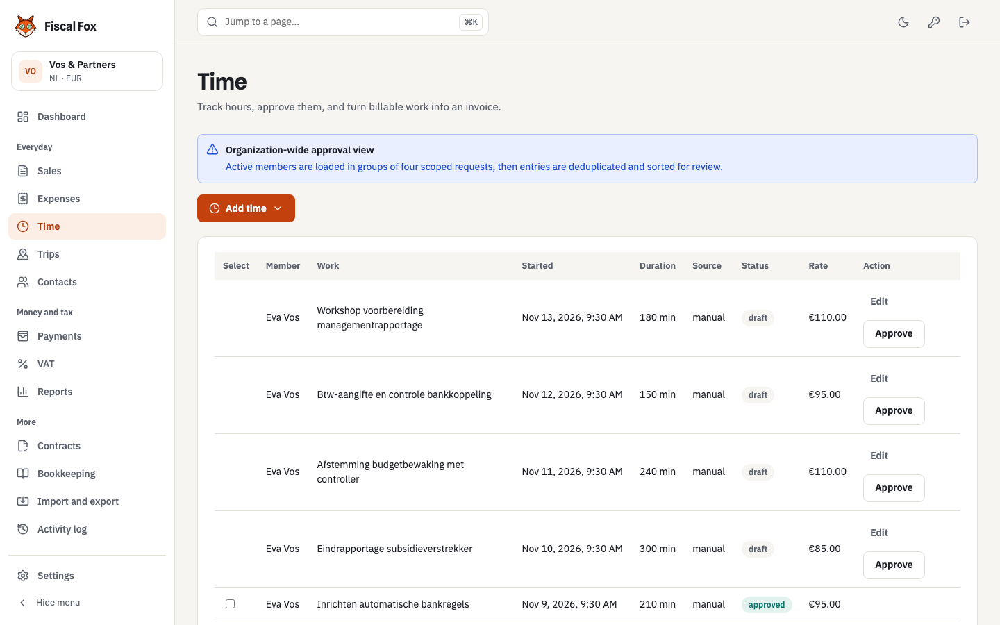
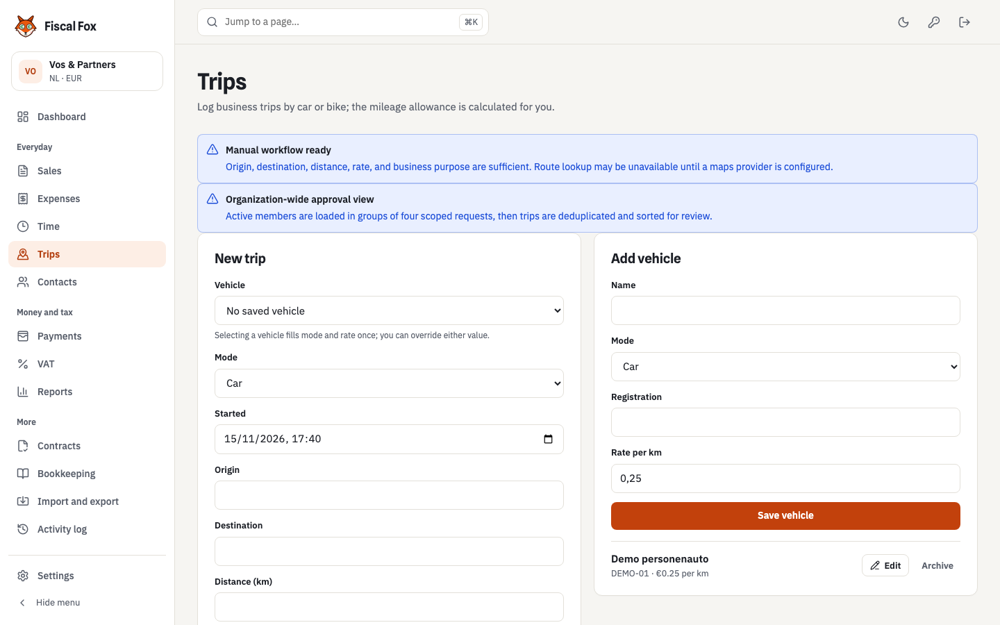

Time and trips
Time and Trips record hours and business travel, let someone approve them, and turn the billable ones into an invoice.
Time

Log hours
- Open Add time.
- Enter a Description and when you Started.
- Optionally pick a Project, Contact, or Linked invoice.
- Leave Billable ticked and set the Hourly rate, or untick it for internal work.
- Fill in Ended to log finished work, or leave it empty to start a timer.
- Select Save or start. A running timer shows Stop timer.
Track time on an invoice in Sales opens this form with that invoice linked.
Approve
New entries are draft. Edit corrects them; Approve locks them in. An
entry can only be approved once it has an end time, a positive duration, and,
when billable, a positive hourly rate.
Owners, admins, and accountants see everyone's entries in one approval view. Members and viewers see their own.
Import from a calendar
Under Calendar intake, Add iCal connection takes a Connection name and a Private iCal URL from your calendar app. Sync imports calendar events as time entries you can edit and approve. Manual time tracking works without any calendar.
Trips

Log a trip
- Under New trip, optionally pick a saved Vehicle. It fills the mode and rate, which you can still change.
- Choose the Mode (car, motorcycle, bike, walking, public transport, or other) and when you Started.
- Enter the Origin, Destination, Distance (km), and Business purpose.
- Tick Billable to customer if you will invoice the trip.
- Select Save trip.
The Rate per km defaults to the Belastingdienst's tax-free mileage allowance for the year of the trip (€0.25 in 2026). See Accounting rules for every year.
Route lookup needs a maps provider configured by your administrator. Without one, type the distance yourself.
Vehicles
Add vehicle saves a Name, Mode, optional Registration, and Rate per km. Saved vehicles can be edited (the new rate applies to trips added afterwards) or archived.
Approve
Draft trips show Approve to owners, admins, and accountants.
Invoice billable work
Approved, billable entries and trips that are not invoiced yet get a checkbox in the Select column.
- Tick the records to bill. They must share one currency.
- The Create invoice from N approved records form appears. Choose the Customer, Issue date, optional Due date, Sales tax code, and Revenue account.
- Select Create invoice draft.
The new invoice draft appears in Sales, ready to edit and finalize.